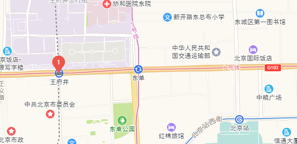

画自定义mark

以下基于高德地图
// js
var cpoint = [116.397428, 39.90923]; //地图中心点坐标
var centerpointer = new AMap.LngLat(cpoint[0],cpoint[1]);
var map = new Amap.Map(dom , {
resizeEnable: true,
zoom: 11, //初始化地图层级
center: cpoint, //初始化地图中心点
// ... 其他参数
})
function drawMark(map,center,content,otherConfig={}){
var marker = new AMap.Marker({
map: map,
zIndex:200,
anchor:'bottom-center', // 设置锚点方位
position: center, //基点位置
offset: new AMap.Pixel(0, 0), //相对于基点的偏移位置
content: content, //自定义点标记覆盖物内容
...otherConfig //其他定制化设置
});
marker.setMap(map); //在地图上添加点
return marker
}
var content = '<div class="mark_wrap">'
+' <div class="dropmarker">' + 1 + '</div>'
+'</div>'
drawMark(map,centerpointer,content)
// scss
// 样式仅做示例，可根据实际情况调整
// 地图标记物
.amap-marker-content {
white-space: normal !important;
}
// 不定尺寸mark盒子容器
.mark_wrap {
width: 16px;
height: 16px;
border-radius: 50%;
position: relative;
}
// 水滴标记
.dropmarker{
width: 26px;
height: 26px;
border-radius: 50%;
background: #EC564C;
line-height: 26px;
text-align: center;
color: white;
position: absolute;
left: 50%;
bottom: 8px;
transform: translateX(-50%);
&:after {
content: '';
width: 0px;
height: 0px;
border: 10px transparent solid;
position: absolute;
bottom: -20px;
left: 50%;
transform: translateX(-50%);
border-right: 10px solid transparent;
border-top: 15px solid #EC564C;
border-left: 10px solid transparent;
}
&::before{
content: '';
width: 16px;
height: 6px;
background-color: rgba($color: #6E6E6C, $alpha: 0.8);
border-radius: 12px / 5px;
position: absolute;
left: 50%;
transform: translateX(-50%);
bottom: -14px;
}
}